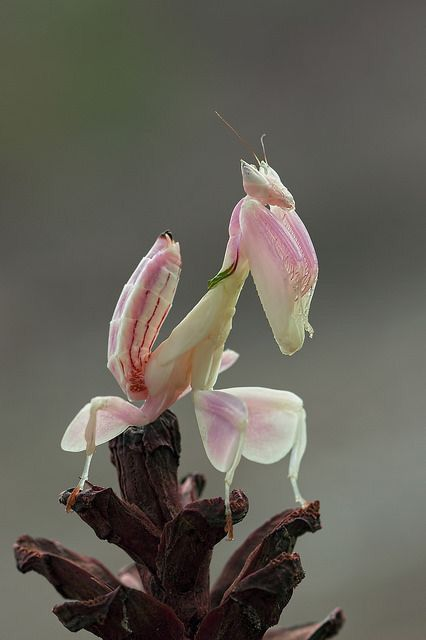
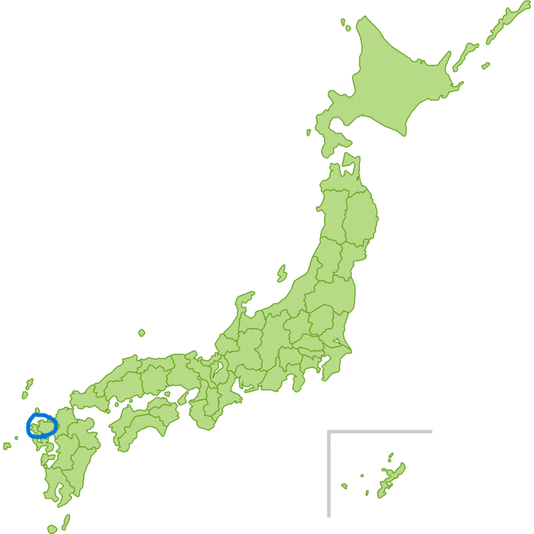

学名：yakabe yuto
分類：両生類
生息地：

旧大日本帝国、松浦國あたり（魏志倭人伝より抜粋、のちの佐賀県唐津
体長：170cm(169.5)
技：釘パンチ
説明
おもに陸地に生息している。普段はおとなしいが、夜から朝にかけて気性が荒くなる。エサは主に雑食だが、キノコには毒があるので食べません。動きは非常に素早く、ストレスを感じると水深の深い位置へ移動する。現在は捕獲することは法律で禁止されており、違法な取引や捕獲は厳しく罰せられる。